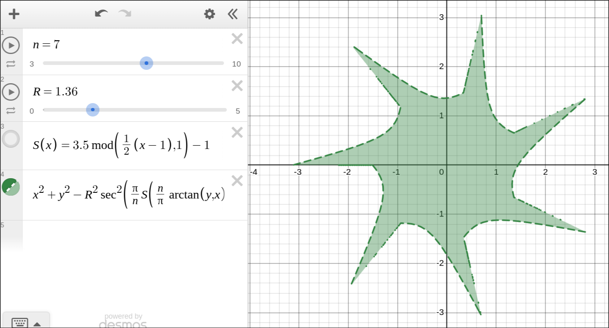
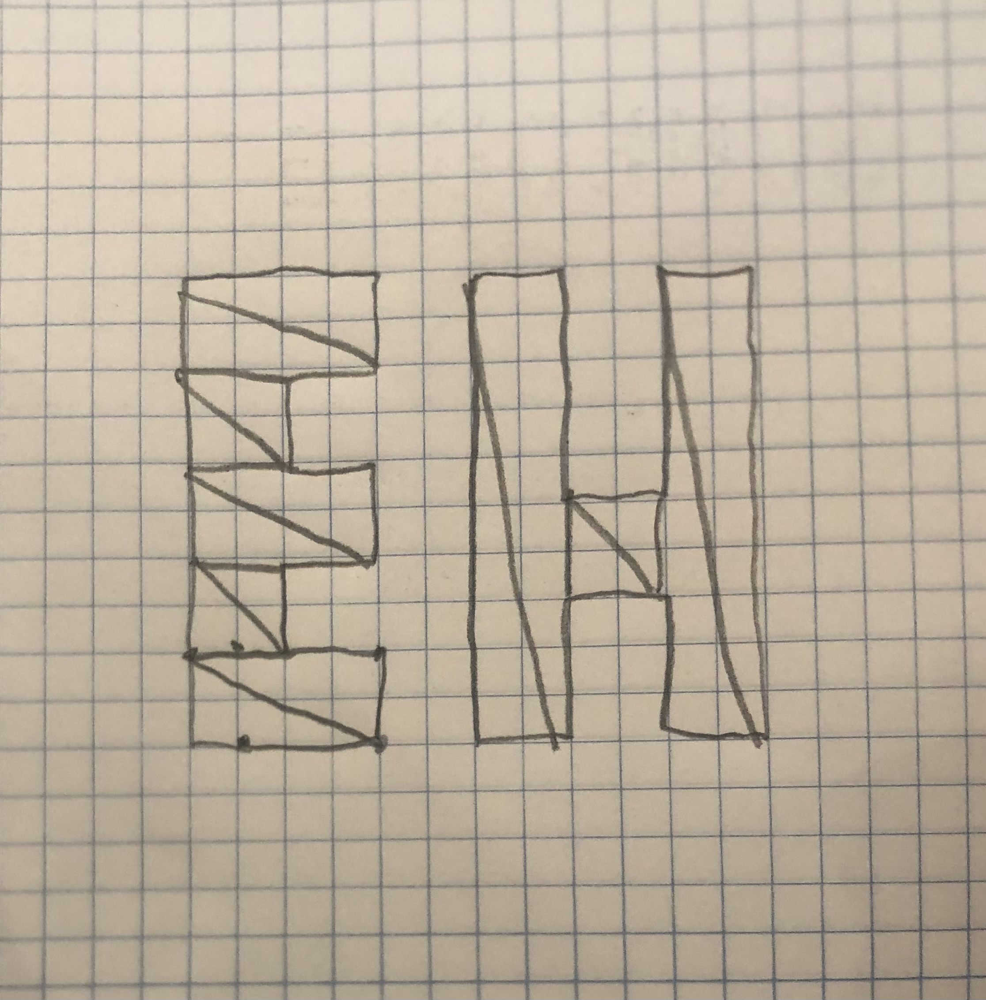

I originally plotted out the letters on graph paper, since I knew they would require the most planning to look decent. I ended up slightly adjusting the H. For the shape, I had found an implicit formula for arbitary polygons online, and so I modified it to create a star shape as shown in the desmos screenshot. Then I simply scaled it multiple times to create the nested colors. Finally the for the background I just used a quad with vertex coloring to create a gradient.

